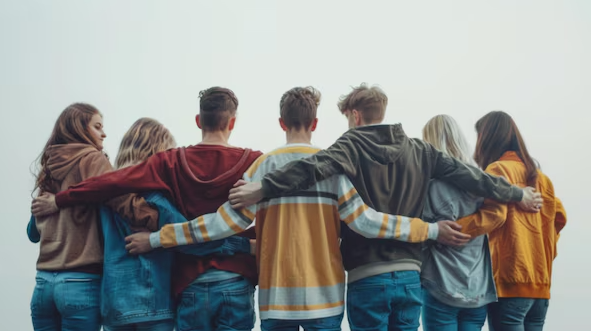

Denne side er lavet af unge - for unge. Formålet er, at formidle information og give gode råd, som har hjulpet os og mange andre. Selvom rejsen kan føles ensom, er vi mange.
"Mental sundhed starter med en samtale"
"Da jeg først åbnede op omkring mine tanker, ændrede alt sig."
- Mette, 16 år
"Jeg følte mig helt alene, men ud af at vi er mange og vi passer på hinanden."
- Sebastian, 18 år
"Jeg fandt min trøst i et fællesskab, jeg slet ikke vidste eksisterede."
- Ditte, 19år

På denne side kan du finde information, gode råd og fællesskab, når livet er svært.